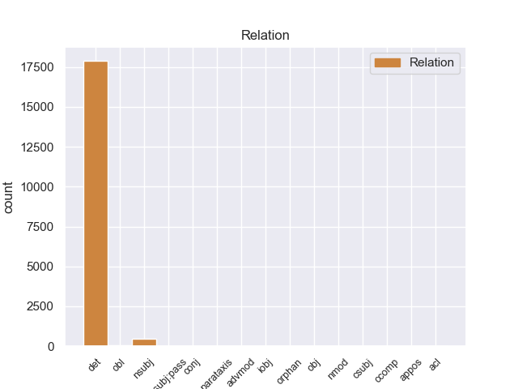
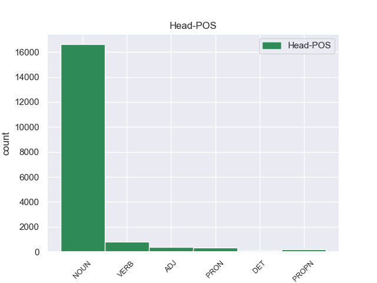
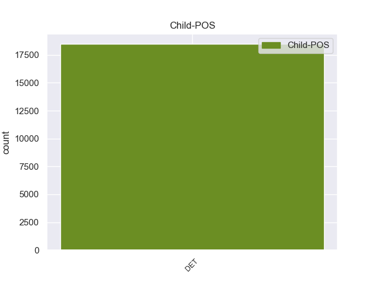

Distribution of features within this leaf



Agreement Rules sorted by frequency.
- When the dependent token is the nominal modifier(nmod) of the head token, and the head token is NUM and the dependent token is NOUN.
1 Есть _ _ _ _ 0 _ _ _
2 двое _ _ _ _ 0 _ _ _
3 сыновей _ _ _ _ 0 _ _ _
4 ( _ _ _ _ 0 _ _ _
5 по _ _ _ _ 0 _ _ _
6 одному один NUM CD Animacy=Anim|Case=Dat|Gender=Masc|Number=Sing|NumType=Card 0 _ _ _
7 от _ _ _ _ 0 _ _ _
8 каждого _ _ _ _ 0 _ _ _
9 брака брак NOUN NN Animacy=Inan|Case=Gen|Gender=Masc|Number=Sing 6 nmod _ SpaceAfter=No
10 ) _ _ _ _ 0 _ _ _
11 . _ _ _ _ 0 _ _ _
1 Часть _ _ _ _ 0 _ _ _
2 комнат _ _ _ _ 0 _ _ _
3 сдавались _ _ _ _ 0 _ _ _
4 в _ _ _ _ 0 _ _ _
5 наём _ _ _ _ 0 _ _ _
6 , _ _ _ _ 0 _ _ _
7 так _ _ _ _ 0 _ _ _
8 у _ _ _ _ 0 _ _ _
9 одного один NUM CD Animacy=Anim|Case=Gen|Gender=Masc|Number=Sing|NumType=Card 0 _ _ _
10 из _ _ _ _ 0 _ _ _
11 обитателей _ _ _ _ 0 _ _ _
12 дома _ _ _ _ 0 _ _ _
13 , _ _ _ _ 0 _ _ _
14 богатого _ _ _ _ 0 _ _ _
15 украинского _ _ _ _ 0 _ _ _
16 землевладеца землевладец NOUN NN Animacy=Anim|Case=Gen|Gender=Masc|Number=Sing 9 appos _ _
17 П _ _ _ _ 0 _ _ _
18 . _ _ _ _ 0 _ _ _
1 Один один NUM CD Animacy=Anim|Case=Nom|Gender=Masc|Number=Sing|NumType=Card 0 _ _ _
2 из _ _ _ _ 0 _ _ _
3 главных _ _ _ _ 0 _ _ _
4 организаторов _ _ _ _ 0 _ _ _
5 переворота _ _ _ _ 0 _ _ _
6 3 _ _ _ _ 0 _ _ _
7 апреля _ _ _ _ 0 _ _ _
8 1984 _ _ _ _ 0 _ _ _
9 года _ _ _ _ 0 _ _ _
10 , _ _ _ _ 0 _ _ _
11 член член NOUN NN Animacy=Anim|Case=Nom|Gender=Masc|Number=Sing 1 conj _ _
12 Военного _ _ _ _ 0 _ _ _
13 комитета _ _ _ _ 0 _ _ _
14 национального _ _ _ _ 0 _ _ _
15 возрождения _ _ _ _ 0 _ _ _
16 . _ _ _ _ 0 _ _ _
Disagree Examples:
1 Это _ _ _ _ 0 _ _ _
2 трагедия _ _ _ _ 0 _ _ _
3 стала _ _ _ _ 0 _ _ _
4 одной один NUM CD Animacy=Inan|Case=Ins|Gender=Fem|Number=Sing|NumType=Card 0 _ _ _
5 из _ _ _ _ 0 _ _ _
6 самых _ _ _ _ 0 _ _ _
7 крупных _ _ _ _ 0 _ _ _
8 катастров катастрофа NOUN NN Animacy=Inan|Case=Gen|Gender=Fem|Number=Plur 4 nmod _ _
9 в _ _ _ _ 0 _ _ _
10 Эстонии _ _ _ _ 0 _ _ _
11 20-го _ _ _ _ 0 _ _ _
12 века _ _ _ _ 0 _ _ _
13 . _ _ _ _ 0 _ _ _
1 Маршруты _ _ _ _ 0 _ _ _
2 по _ _ _ _ 0 _ _ _
3 которым _ _ _ _ 0 _ _ _
4 будет _ _ _ _ 0 _ _ _
5 идти _ _ _ _ 0 _ _ _
6 игрок _ _ _ _ 0 _ _ _
7 будет _ _ _ _ 0 _ _ _
8 содержать _ _ _ _ 0 _ _ _
9 продвижение _ _ _ _ 0 _ _ _
10 романтических _ _ _ _ 0 _ _ _
11 , _ _ _ _ 0 _ _ _
12 а _ _ _ _ 0 _ _ _
13 также _ _ _ _ 0 _ _ _
14 сексуальных _ _ _ _ 0 _ _ _
15 отношений _ _ _ _ 0 _ _ _
16 с _ _ _ _ 0 _ _ _
17 одной один NUM CD Animacy=Anim|Case=Ins|Gender=Fem|Number=Sing|NumType=Card 0 _ _ _
18 из _ _ _ _ 0 _ _ _
19 трёх _ _ _ _ 0 _ _ _
20 девушек девушка NOUN NN Animacy=Anim|Case=Gen|Gender=Fem|Number=Plur 17 nmod _ _
21 ( _ _ _ _ 0 _ _ _
22 Айша _ _ _ _ 0 _ _ _
23 , _ _ _ _ 0 _ _ _
24 Алма _ _ _ _ 0 _ _ _
25 и _ _ _ _ 0 _ _ _
26 Фан _ _ _ _ 0 _ _ _
27 ) _ _ _ _ 0 _ _ _
28 . _ _ _ _ 0 _ _ _
1 А _ _ _ _ 0 _ _ _
2 в _ _ _ _ 0 _ _ _
3 Лондонской _ _ _ _ 0 _ _ _
4 Школе _ _ _ _ 0 _ _ _
5 Экономики _ _ _ _ 0 _ _ _
6 и _ _ _ _ 0 _ _ _
7 Политических _ _ _ _ 0 _ _ _
8 наук _ _ _ _ 0 _ _ _
9 органично _ _ _ _ 0 _ _ _
10 сочетаются _ _ _ _ 0 _ _ _
11 оба _ _ _ _ 0 _ _ _
12 варианта _ _ _ _ 0 _ _ _
13 : _ _ _ _ 0 _ _ _
14 оценивание _ _ _ _ 0 _ _ _
15 в _ _ _ _ 0 _ _ _
16 качестве _ _ _ _ 0 _ _ _
17 отдельной _ _ _ _ 0 _ _ _
18 учебной _ _ _ _ 0 _ _ _
19 дисциплины _ _ _ _ 0 _ _ _
20 , _ _ _ _ 0 _ _ _
21 курс _ _ _ _ 0 _ _ _
22 `` _ _ _ _ 0 _ _ _
23 Аналитические _ _ _ _ 0 _ _ _
24 рамки _ _ _ _ 0 _ _ _
25 оценивания _ _ _ _ 0 _ _ _
26 политик _ _ _ _ 0 _ _ _
27 '' _ _ _ _ 0 _ _ _
28 ( _ _ _ _ 0 _ _ _
29 Analytical _ _ _ _ 0 _ _ _
30 Frameworks _ _ _ _ 0 _ _ _
31 for _ _ _ _ 0 _ _ _
32 policy _ _ _ _ 0 _ _ _
33 Evaluation _ _ _ _ 0 _ _ _
34 ) _ _ _ _ 0 _ _ _
35 и _ _ _ _ 0 _ _ _
36 как _ _ _ _ 0 _ _ _
37 одна один NUM CD Animacy=Inan|Case=Nom|Gender=Fem|Number=Sing|NumType=Card 0 _ _ _
38 из _ _ _ _ 0 _ _ _
39 составляющих составляющая NOUN NN Animacy=Inan|Case=Gen|Gender=Fem|Number=Plur 37 nmod _ _
40 других _ _ _ _ 0 _ _ _
41 дисциплин _ _ _ _ 0 _ _ _
42 ( _ _ _ _ 0 _ _ _
43 среди _ _ _ _ 0 _ _ _
44 них _ _ _ _ 0 _ _ _
45 можно _ _ _ _ 0 _ _ _
46 выделить _ _ _ _ 0 _ _ _
47 экономическую _ _ _ _ 0 _ _ _
48 сферу _ _ _ _ 0 _ _ _
49 , _ _ _ _ 0 _ _ _
50 сферу _ _ _ _ 0 _ _ _
51 здравоохранения _ _ _ _ 0 _ _ _
52 и _ _ _ _ 0 _ _ _
53 защиту _ _ _ _ 0 _ _ _
54 окружающей _ _ _ _ 0 _ _ _
55 среды _ _ _ _ 0 _ _ _
56 ) _ _ _ _ 0 _ _ _
57 . _ _ _ _ 0 _ _ _
1 Гороховая _ _ _ _ 0 _ _ _
2 колбаса _ _ _ _ 0 _ _ _
3 была _ _ _ _ 0 _ _ _
4 одним один NUM CD Animacy=Inan|Case=Ins|Gender=Masc|Number=Sing|NumType=Card 0 _ _ _
5 из _ _ _ _ 0 _ _ _
6 повседневных _ _ _ _ 0 _ _ _
7 продуктов продукт NOUN NN Animacy=Inan|Case=Gen|Gender=Masc|Number=Plur 4 nmod _ _
8 питания _ _ _ _ 0 _ _ _
9 немецких _ _ _ _ 0 _ _ _
10 солдат _ _ _ _ 0 _ _ _
11 в _ _ _ _ 0 _ _ _
12 XIX _ _ _ _ 0 _ _ _
13 и _ _ _ _ 0 _ _ _
14 XX _ _ _ _ 0 _ _ _
15 веке _ _ _ _ 0 _ _ _
16 вплоть _ _ _ _ 0 _ _ _
17 до _ _ _ _ 0 _ _ _
18 конца _ _ _ _ 0 _ _ _
19 Второй _ _ _ _ 0 _ _ _
20 мировой _ _ _ _ 0 _ _ _
21 войны _ _ _ _ 0 _ _ _
22 . _ _ _ _ 0 _ _ _
1 Думаю _ _ _ _ 0 _ _ _
2 , _ _ _ _ 0 _ _ _
3 это _ _ _ _ 0 _ _ _
4 одна один NUM CD Animacy=Inan|Case=Nom|Gender=Fem|Number=Sing|NumType=Card 0 _ _ _
5 из _ _ _ _ 0 _ _ _
6 его _ _ _ _ 0 _ _ _
7 лучших _ _ _ _ 0 _ _ _
8 песен песня NOUN NN Animacy=Inan|Case=Gen|Gender=Fem|Number=Plur 4 nmod _ SpaceAfter=No
9 , _ _ _ _ 0 _ _ _
10 потому _ _ _ _ 0 _ _ _
11 что _ _ _ _ 0 _ _ _
12 в _ _ _ _ 0 _ _ _
13 ней _ _ _ _ 0 _ _ _
14 отличные _ _ _ _ 0 _ _ _
15 слова _ _ _ _ 0 _ _ _
16 , _ _ _ _ 0 _ _ _
17 -- _ _ _ _ 0 _ _ _
18 я _ _ _ _ 0 _ _ _
19 тут _ _ _ _ 0 _ _ _
20 ни _ _ _ _ 0 _ _ _
21 при _ _ _ _ 0 _ _ _
22 чём _ _ _ _ 0 _ _ _
23 . _ _ _ _ 0 _ _ _